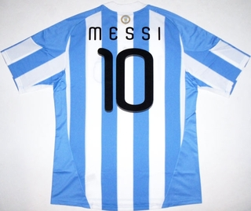
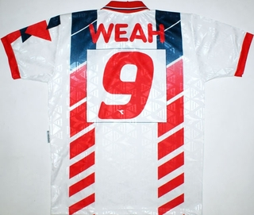

Cada tres días la historia de Leo Messi tiene un nuevo capítulo de referencia. No es un debate que importe en este momento, pero siempre que le situamos en un podio de todos los tiempos asoma una duda para determinar su posición: no ha ganado un Mundial. Es un argumento que Messi también rebate. Con [...]
Cada tres días la historia de Leo Messi tiene un nuevo capítulo de referencia. No es un debate que importe en este momento, pero siempre que le situamos en un podio de todos los tiempos asoma una duda para determinar su posición: no ha ganado un Mundial. Es un argumento que Messi también rebate. Con otro futbolista de una dimensión un punto inferior no habría ninguna duda. Si no hay Mundial no hay sitio en el Olimpo. Con el Messi actual incluso esto es cuestionable. El argentino tendrá la suerte de intentarlo en un par de ocasiones mínimo. A continuación recordamos a otros que ya han pasado, que no tienen la suerte de su juventud, que a veces les ha perjudicado su país de origen, otras su mal carácter o simplemente un cúmulo de infortunios. No solo no ganaron una Copa del Mundo, sino que nunca la disputaron.
De la mano de Classic Football Shirts, la tienda especializada en camisetas antiguas, nos acercamos al fútbol con una perspectiva diferente, desde los uniformes con los que se ha construído la historia del deporte rey.
Messi ha tenido profesores, Maradona también los tuvo. En su regreso a Boca Juniors, antes del retiro, coincidió una temporada (1997) con el peruano Nolberto Solano, al que Diego solía llamar ‘el pequeño maestro’ por su habilidad en los tiros libres. Fuera por el elogio del Pelusa o por una red de ojeadores intuitivos, Solano cumplió el siguiente curso de blanco y negro, enfundado en la zamarra del Newcastle, sirviendo centros medidos a la cabecita de Alan Shearer. El extremo nunca consiguió clasificar a Perú para un Mundial, se retiró en 2009 y ahora reside en Newcastle comenzando su carrera como entrenador.
Shearer cambió oeste por este, porque en el norte ya estaba, cuando se mudó de Blackburn a Newcastle upon Tyne. Las urracas pagaron por él 15 millones de libras, fue el traspaso record de la época. Sin embargo, la plantilla que dirigía Kevin Keegan nunca supo ganar la Premier League. Se toparon con el Manchester United, vencedor eterno de la época moderna, y la irritación de Keegan se hizo frase: “I will love it if we beat them! Love it!“. No hubo premio, el Newcastle no pudo repetir la hazaña del Blackburn de la temporada 94-95. ¿Qué pasó aquél año con el Manchester United? La segunda vuelta se la perdió Eric Cantona.
En la etapa de esplendor del mediapunta cejijunto, Francia no logró clasificarse para los Mundiales de Italia y Estados Unidos. Además Cantona protagonizó un par de escándalos de los suyos que le privaron puntualmente de participar en partidos internacionales. Podría haber llegado perfectamente a La Copa del Mundo de 1998, pero Cantona se retiró un año antes, a la pronta edad de 30 años. Además el relevo generacional ya se había producido en la Euro 96′, ganando enteros Zinedine Zidane.
Seguimos en Manchester para observar el fenómeno de lo no inglés y acordarnos de la dicha de Pelé good, Maradona better, George Best. Tras dos décadas de ausencia, cuando finalmente Irlanda se clasificó para el Mundial de España 82′, Best tenía 36 años, bebía como siempre y jugaba partidos de exhibición en China, Hong Kong, y otros paisajes exóticos. El seleccionador Billy Bingham no le incluyó en sus planes.
Un paréntesis sin enlace. Matt Le Tissier nació en St Peter Port, Guernsey, en las islas del Canal que tocan a la Normandía. Es decir, podía escoger nación. Prefirió Inglaterra y los seleccionadores no contaron con él. Le Tissier, el genial futbolista del Southampton, sólo disputó 8 partidos internacionales.
Volvamos. Si Best fue el talento efímero, Ryan Giggs es el prolongado, pero Gales solo se ha clasificado una vez para la fase final de un Mundial y fue en 1958. Aunque nos parezca que Giggs lleve jugando toda la vida, incluso para él esa fecha es temprana. Comparte sufrimiento nacional con otros grandes que tampoco acudieron a la cita, como Mark Hugues, John Benjamin Toshack, Craig Bellamy, Gary Speed o Ian Rush.
En 1999, Ian Rush abandonó la Premier League para disfrutar de un corto periodo en la liga australiana y poner punto y final a su carrera. Ese verano llegó a Liverpool el que probablemente ha sido uno de los extranjeros no británicos más rentables de los reds: el finés Samy Hyypia. Un año más tarde, lo hizo Jari Olavi Litmanen, que también vistió de red y tampoco acudió a un Mundial.
El caso Litmanen es de los más tristes, porque sin las lesiones de por medio da la sensación que habría explotado de verdad. Caso opuesto al de Bernd Schuster, azulgrana previo al finés, que se perdió España 82′ por lesión y el resto por omisión. Se desvinculó antes de hora de la selección alemana, a los 23 años, por cosas como esta encontrada en el Archivo de El País, con fecha del 23 de junio de 1981: “El entrenador de la selección alemana de fútbol, Jupp Derwall, intentó reconciliarse con el barcelonista Bernd Schuster, durante el pasado fin de semana, aunque sin conseguirlo. Ambos están enfrentados a consecuencia de unas declaraciones del jugador en las que acusaba a Derwall de ser sólo un títere en manos de los internacionales Paul Breitner y Karl Heinz Rummenigge. Schuster se niega a jugar con la selección en estas circunstancias.”
En los cuarenta no hubo Mundiales, pero el fútbol europeo lo dominaba un equipo italiano: El Torino. Un equipo al que se llevó la tragedia de Superga, el 4 de mayo de 1949, y que nos privó entre otros de Valentino Mazzola. El conjunto italiano no supo salir de la desgracia. Posteriormente solo ganó una liga en 1976 y actualmente milita en la Serie B. A finales de los 90, vivió allí una de sus últimas aventuras futbolísticas el ghanés Abédi Pele. Él sembró la base para que su combinado disfrutara de las grandes citas a posteriori, y entre otros elogios recibió el African player of the season en 1993. Entonces el premio lo daba la revista France Football, que era el vinculante tras una tradición de más de veinte años. Ocurrió que la Confederación Africana de Fútbol quiso el premio para sí, y entre que se ponían de acuerdo entre 1993 y 1994 hubo duplicidad. En 1994 la confederación decidió que el mejor había sido el futbolista del Sporting de Portugal Emmanuel Amunike. En cambio, con un mejor criterio, la revista francesa le dio el premio al liberiano George Weah. Cosas de la vida, el primero jugó un Mundial (Estados Unidos) y el segundo se quedó sin.

George Weah fue además Balón de Oro el año 1995. Un premio que se inauguró en 1956 con la victoria del inglés Stanley Matthews y la segunda posición de Alfredo Di Stéfano, que lo ganaría dos veces en años posteriores. Nada ha impedido a Di Stéfano ser recordado como uno de los mejores futbolistas de todos los tiempos, a pesar de no haber disputado nunca un Mundial. Lo intentó por última vez con España a los 36 años, pero se perdió el torneo del 62′ por lesión. El reto de su compatriota Leo Messi, que ya ha disputado dos, es aún mayor. Ganar un Mundial como figura principal de Argentina. En estas condiciones solo aguantarían la comparación Pelé -cuyos goles seguramente no han sido tan escrupulosamente bien documentados como los de César- y Maradona.
Puedes comprar estas camisetas, y cientos más, en Classic Football Shirts.
Recomendamos la entrevista a Nolberto Solano en la Four Four Two de este mes, de donde hemos sacado la cita del ‘pequeño maestro’.


 En el imaginario colectivo viste con camiseta roja y pantalones blancos, pero la historia del triniteño Dwight Yorke empieza mucho antes de convertirse en diablo rojo. Seguramente esos cuatro años en el Manchester United fueron los más mediáticos. Una entidad de magnitud, el escaparate, tres Premier League y una Liga de Campeones. Son títulos, popularidad, la cúspide que elevó su mito de mujeriego, romperredes y fenómeno a la primera página de los periódicos. Sin embargo, en su vida en Birmingham todo aquello ya sucedía. Coloreado con el claret and blue del Aston Villa, Yorke ya iba con mujeres, marcaba goles -¡sí, incluso antes de conocer a Andy Cole!- y tenía una canción dedicada. Cada vez que superaba al arquero, en Villa Park se emulaba a Sinatra al ritmo de la ciudad que nunca duerme.
En el imaginario colectivo viste con camiseta roja y pantalones blancos, pero la historia del triniteño Dwight Yorke empieza mucho antes de convertirse en diablo rojo. Seguramente esos cuatro años en el Manchester United fueron los más mediáticos. Una entidad de magnitud, el escaparate, tres Premier League y una Liga de Campeones. Son títulos, popularidad, la cúspide que elevó su mito de mujeriego, romperredes y fenómeno a la primera página de los periódicos. Sin embargo, en su vida en Birmingham todo aquello ya sucedía. Coloreado con el claret and blue del Aston Villa, Yorke ya iba con mujeres, marcaba goles -¡sí, incluso antes de conocer a Andy Cole!- y tenía una canción dedicada. Cada vez que superaba al arquero, en Villa Park se emulaba a Sinatra al ritmo de la ciudad que nunca duerme.

 Cuanta más clásico es un club y más solera posee, más posiblidades hay de algunos tópicos se asienten y acabe convirtiéndose en lugares comunes para describir su situación en cualquier instante de tiempo. No es casualidad, sino la repetición de pautas que se asientan, de forma más o menos afortunada, como señas de identidad, y en ocasiones terminan motivando conductas y líneas de actuación dentro de la propia institución, amén de condicionar la mirada desde la que se lo analiza. Pocos tópicos hay más repetidos que afirmar que todo tópico tiene su parte de verdad.
Cuanta más clásico es un club y más solera posee, más posiblidades hay de algunos tópicos se asienten y acabe convirtiéndose en lugares comunes para describir su situación en cualquier instante de tiempo. No es casualidad, sino la repetición de pautas que se asientan, de forma más o menos afortunada, como señas de identidad, y en ocasiones terminan motivando conductas y líneas de actuación dentro de la propia institución, amén de condicionar la mirada desde la que se lo analiza. Pocos tópicos hay más repetidos que afirmar que todo tópico tiene su parte de verdad. Acusado físicamente durante el curso, Guardiola sentó a Xavi cuando el partido estaba decidido. Porque lució como antes y no quiere volver a perderlo, hizo lo propio con Iniesta. Los asistentes de los dos primeros tantos fueron reservados para posteriores combates. Cesc, autor del tercer pase, se quedó en el terreno de juego, pero actuando pausadamente en unos minutos que no requerían su mejor versión. Y Messi, asistido por los mejores aliados posibles, tres de los pasadores más precisos del mundo, se quedó sin ellos solventada la eliminatoria. Pero aún quedaba tiempo. Cuando se halló sin sus socios habituales encontró un amigo en el guardameta Leno, que harto de recibir goles cedió un balón inexplicable, quizás por frustración, a los pies del argentino. Un error mortal. Cuatro de Leo y seis del Barça. Un fenómeno que no se explica sin la extrema ambición de Messi, que siguió insistiendo insaciable en cada jugada, en busca de todos los récords. Por eso conquistó un quinto, la goleada se infló a siete y el mundo del fútbol se preguntó si alguna vez hubo alguien que hiciera cosas tan bárbaras como las que repite el azulgrana cada semana. Por un momento se olvidó la clasificación, porque ya se había amarrado en la ida, y solo se pensó en Messi, artífice principal de la holgada clasificación del Barcelona a los cuartos de final de la Champions League (10-2).
Acusado físicamente durante el curso, Guardiola sentó a Xavi cuando el partido estaba decidido. Porque lució como antes y no quiere volver a perderlo, hizo lo propio con Iniesta. Los asistentes de los dos primeros tantos fueron reservados para posteriores combates. Cesc, autor del tercer pase, se quedó en el terreno de juego, pero actuando pausadamente en unos minutos que no requerían su mejor versión. Y Messi, asistido por los mejores aliados posibles, tres de los pasadores más precisos del mundo, se quedó sin ellos solventada la eliminatoria. Pero aún quedaba tiempo. Cuando se halló sin sus socios habituales encontró un amigo en el guardameta Leno, que harto de recibir goles cedió un balón inexplicable, quizás por frustración, a los pies del argentino. Un error mortal. Cuatro de Leo y seis del Barça. Un fenómeno que no se explica sin la extrema ambición de Messi, que siguió insistiendo insaciable en cada jugada, en busca de todos los récords. Por eso conquistó un quinto, la goleada se infló a siete y el mundo del fútbol se preguntó si alguna vez hubo alguien que hiciera cosas tan bárbaras como las que repite el azulgrana cada semana. Por un momento se olvidó la clasificación, porque ya se había amarrado en la ida, y solo se pensó en Messi, artífice principal de la holgada clasificación del Barcelona a los cuartos de final de la Champions League (10-2).